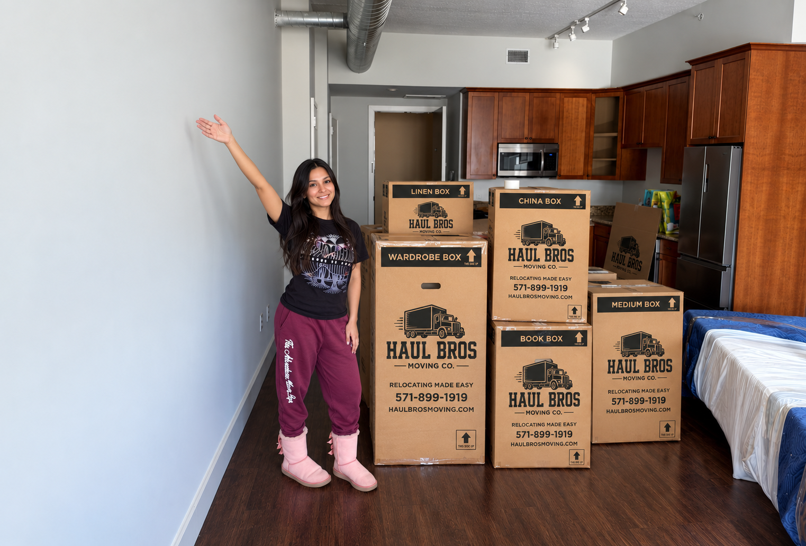

Affordable & Top-Rated Movers in Fredericksburg, VA: Moving Costs, Services & Local Guide
Compare moving costs, services, and practical tips for choosing affordable, top-rated movers in Fredericksburg, VA with Haul Bros Moving Co LLC.

Affordable & Top-Rated Movers in Fredericksburg, VA: Moving Costs, Services & Local Guide
Updated for 2026 | By Haul Bros Moving Co LLC
Looking for **affordable movers in Fredericksburg, VA**?
Whether you're moving across Fredericksburg, relocating between Fredericksburg and Stafford, moving into a new apartment, purchasing a home, downsizing, moving an office, or leaving Virginia altogether, choosing the right moving company is one of the most important parts of the process.
Customers searching for **movers in Fredericksburg, VA** commonly want answers to questions like:
How much do movers cost in Fredericksburg, VA?
What are the top-rated moving companies serving Fredericksburg?
How do I find affordable movers without sacrificing quality?
Can movers handle apartments, townhouses, large houses, storage units, packing, and long-distance moves?
At **Haul Bros Moving Co LLC**, we provide professional moving services throughout Fredericksburg, Stafford County, Spotsylvania County, Northern Virginia, Washington, DC, Maryland, and surrounding areas.
Our goal is straightforward:
Professional service. Clear pricing. Careful moving.
Relocating Made Easy.
How Much Do Movers Cost in Fredericksburg, VA?
There isn't one universal price for a Fredericksburg move.
Your moving cost depends on factors including:
- Size of your home
- Amount of furniture
- Number of boxes
- Number of movers
- Stairs
- Elevator access
- Walking distance
- Truck access
- Packing requirements
- Furniture disassembly
- Heavy or specialty items
- Pickup and delivery distance
- Total moving time
At **Haul Bros Moving Co LLC**, our standard local moving rates currently start at:
2 Movers + Moving Truck
$395 for the first 2 hours
$159 per additional hour
This can be a good option for smaller apartments, condos, storage moves, and limited household inventories.
3 Movers + Moving Truck
$495 for the first 2 hours
$189 per additional hour
Three movers may be more appropriate for larger apartments, townhouses, two- or three-bedroom moves, and properties with multiple floors.
4 Movers + Moving Truck
$695 for the first 2 hours
$249 per additional hour
Four movers may be recommended for larger three-, four-, and five-bedroom households, heavier inventories, multi-level homes, and moves where additional manpower can improve efficiency.
The appropriate crew depends on the actual move.
Sometimes hiring an additional mover can reduce the total amount of time required to complete a larger relocation.
What Does Your Moving Price Include?
When comparing **Fredericksburg moving companies**, don't compare hourly rates without comparing what's included.
A lower advertised rate may not include everything necessary to complete your move.
Haul Bros Moving Co LLC local moving services can include:
- Professional movers
- Moving truck
- Loading
- Transportation
- Unloading
- Moving blankets
- Furniture protection
- Shrink wrap when appropriate
- Dollies
- Hand trucks
- Moving straps
- Floor protection
- Basic furniture disassembly
- Basic furniture reassembly
- Furniture placement
Your exact services and pricing are confirmed in your written estimate.
Our goal is to keep the pricing structure straightforward and avoid unnecessary surprise charges.
Looking for Affordable Movers in Fredericksburg?
Affordable doesn't simply mean cheap.
An **affordable Fredericksburg moving company** should provide reasonable pricing while still supplying the labor, transportation, equipment, protection, and service necessary to complete the move professionally.
Before choosing a mover, ask:
- Is the moving truck included?
- Is fuel included?
- Are moving blankets included?
- Are dollies included?
- Is furniture protection included?
- Is basic disassembly included?
- Are stairs charged separately?
- Are elevators charged separately?
- How is additional time billed?
- Are packing materials extra?
- Is there a minimum number of hours?
This gives you a much better comparison than simply choosing whichever company advertises the lowest hourly number.
What Are the Top-Rated Movers in Fredericksburg, VA?
Fredericksburg has multiple moving companies serving the area, and no single rating tells the entire story.
When searching for **top-rated movers in Fredericksburg**, look at the complete picture.
Recent Customer Reviews
Read what recent customers say about:
- Professionalism
- Furniture handling
- Communication
- Efficiency
- Pricing
- Reliability
- Customer service
Transparent Pricing
You should understand how your move will be billed before moving day.
Professional Equipment
A professional moving company should arrive prepared with appropriate equipment for the scheduled job.
Licensing and Insurance
Ask for relevant company credentials and insurance information when appropriate.
Local Experience
A company familiar with Fredericksburg and surrounding areas can better plan around local neighborhoods, apartment communities, downtown access, traffic, storage facilities, and residential properties.
Why Consider Haul Bros Moving Co LLC?
Haul Bros Moving Co LLC provides professional moving services throughout Fredericksburg and the surrounding region.
We're focused on combining professional moving service with straightforward pricing and reliable communication.
Professional Moving Crews
We offer multiple crew sizes depending on the move.
Proper Moving Equipment
Our crews arrive prepared with standard professional moving equipment for the scheduled service.
Clear Communication
Customers receive their move details, pricing, arrival information, and booking confirmation before moving day.
Local and Long-Distance Service
We're equipped for moves within Fredericksburg as well as relocations throughout Virginia and beyond.
Residential and Commercial Moving
Our services include:
- Local moving
- Long-distance moving
- Apartment moving
- Condo moving
- Townhouse moving
- House moving
- Packing
- Unpacking
- Labor-only moving
- Storage moves
- Office moving
- Commercial relocation
- Senior moving
- Military moving
- Student moving
- Last-minute moving
- Single-item moving
- Small-load moving
- Junk removal
Areas We Serve Around Fredericksburg
Fredericksburg is closely connected with Stafford County and Spotsylvania County, so many moves in the region cross local jurisdictional boundaries even when the actual distance is relatively short.
Haul Bros Moving Co LLC serves customers throughout areas including:
Fredericksburg
Falmouth
Stafford
South Stafford
Spotsylvania
Massaponax
Lee's Hill
Four Mile Fork
Celebrate Virginia
and surrounding communities.
We also serve customers traveling north toward:
Quantico
Dumfries
Woodbridge
Manassas
Springfield
Fairfax
Alexandria
Arlington
and other Northern Virginia destinations.
Downtown Fredericksburg Movers
Moving into or out of Downtown Fredericksburg can require additional planning compared with a suburban home.
Before moving day, consider:
- Street access
- Truck parking
- Building entrances
- Narrow staircases
- Walking distance
- Apartment restrictions
- Loading areas
- Furniture dimensions
Older buildings can also have tighter stairways, doorways, and hallways.
Providing accurate access information before moving day allows the moving crew to prepare properly.
Apartment Movers in Fredericksburg, VA
Apartment moves are one of the most common moving services in the Fredericksburg area.
Before requesting your estimate, tell your mover:
- Apartment floor
- Number of bedrooms
- Elevator availability
- Stair access
- Parking situation
- Distance from unit to truck
- Approximate box count
- Major furniture
- Building moving restrictions
A ground-floor one-bedroom apartment requires a very different moving plan than a third-floor two-bedroom apartment without an elevator.
Townhouse Movers in Fredericksburg
Townhouses often involve multiple flights of stairs.
That makes furniture planning particularly important.
Large items may include:
- King beds
- Mattresses
- Dressers
- Sectionals
- Sofas
- Dining tables
- Office desks
- Entertainment centers
- Exercise equipment
Some furniture may need to be disassembled before being moved safely through stairways and doorways.
Haul Bros can provide basic furniture disassembly and reassembly when included in your moving service.
House Movers in Fredericksburg, VA
Moving a larger house?
Start by creating an inventory.
Include:
- Bedroom furniture
- Living-room furniture
- Dining-room furniture
- Office furniture
- TVs
- Garage items
- Patio furniture
- Exercise equipment
- Appliances being moved
- Storage-room contents
- Approximate number of boxes and totes
Don't forget garages, basements, sheds, closets, and outdoor spaces.
These areas can add significant volume to a household move.
An accurate inventory helps us recommend the right crew and provide a more useful time estimate.
Fredericksburg to Stafford Movers
Moves between Fredericksburg and Stafford are extremely common.
Haul Bros Moving Co LLC serves both areas, allowing us to handle:
Fredericksburg → Stafford
and
Stafford → Fredericksburg
relocations.
Our team can handle the entire process from loading and furniture protection through transportation, unloading, and placement at your new home.
Fredericksburg to Woodbridge Movers
Moving north from Fredericksburg?
Haul Bros Moving Co LLC is based in the Woodbridge area and regularly serves communities throughout the I-95 corridor.
We can assist with moves between Fredericksburg and:
- Stafford
- Quantico
- Triangle
- Dumfries
- Montclair
- Dale City
- Lake Ridge
- Woodbridge
Whether you're relocating for work, family, housing, school, or another reason, we can coordinate the move between both locations.
Fredericksburg to Northern Virginia Movers
Many Fredericksburg residents relocate farther north into Northern Virginia.
We serve destinations including:
Manassas
Springfield
Fairfax
Alexandria
Arlington
Centreville
Chantilly
Reston
Herndon
Tysons
McLean
Traffic and travel time can vary significantly along I-95 and other Northern Virginia routes, so providing exact pickup and delivery locations is important when requesting your estimate.
Long-Distance Movers From Fredericksburg, VA
Planning to leave the Fredericksburg area?
Haul Bros also provides long-distance moving services.
Long-distance moving estimates may consider:
- Distance
- Household inventory
- Crew requirements
- Truck requirements
- Loading conditions
- Delivery access
- Scheduling
- Specialty items
- Additional requested services
For an accurate estimate, provide the complete pickup and delivery locations along with your furniture inventory and approximate number of boxes.
Packing Services in Fredericksburg
Packing is often one of the most time-consuming parts of moving.
Haul Bros can provide:
Full Packing
Our crew packs the household items included in your estimate.
Partial Packing
You pack most of the home and we handle specific rooms or items.
Partial packing can be particularly useful for:
- Kitchens
- Glassware
- Fragile items
- Electronics
- Artwork
- Closets
- Office equipment
You can also pack everything yourself and hire us strictly for the move.
Labor-Only Movers in Fredericksburg
Already have a rental truck or moving container?
You may only need professional moving labor.
Haul Bros can assist with:
- U-Haul loading
- U-Haul unloading
- Penske loading
- Rental truck unloading
- POD loading
- POD unloading
- Moving container loading
- Storage unit loading
- Storage unit unloading
- In-home furniture moving
- Furniture rearrangement
Labor-only moving can be a practical option for customers handling their own transportation.
Storage Unit Movers in Fredericksburg
Moving into or out of storage?
Tell your movers:
- Storage facility location
- Unit size
- How full the unit is
- Floor level
- Elevator availability
- Truck access
- Furniture inventory
- Approximate number of boxes
A storage unit's dimensions don't always tell the full story.
A tightly packed smaller unit can require more work than a larger unit that is only partially filled.
Office & Commercial Movers in Fredericksburg
Haul Bros Moving Co LLC also assists businesses with office and commercial relocations.
Items may include:
- Office desks
- Chairs
- Filing cabinets
- Conference tables
- Printers
- Computers
- Boxes
- Shelving
- Other office equipment
Commercial moves require careful planning because businesses often need to minimize downtime.
Providing a complete inventory, access information, and required timeline allows us to plan the crew appropriately.
Senior Moving Services in Fredericksburg
Moving later in life can involve more than simply transporting furniture.
Customers may be:
- Downsizing
- Moving closer to family
- Relocating into a smaller home
- Moving into an apartment or senior community
- Moving items into storage
Haul Bros offers a **5% senior discount** for eligible moves.
We can also assist with packing, furniture moving, loading, unloading, and placement at the new residence.
How Can You Save Money on Your Fredericksburg Move?
Preparation can have a direct impact on moving time.
Declutter Before Moving
Sell, donate, recycle, or dispose of belongings you don't want transported.
Finish Packing Before Moving Day
If you're packing yourself, have boxes sealed and ready before the crew arrives.
Label Boxes
Write the destination room on each box.
Reserve Elevators
Coordinate elevator reservations before moving day when required.
Clear Pathways
Make sure movers can safely access furniture and boxes.
Provide an Accurate Inventory
Don't leave major furniture or specialty items off your estimate.
Being organized helps the moving crew work efficiently.
Frequently Asked Questions About Movers in Fredericksburg, VA
How much do movers cost in Fredericksburg, VA?
Pricing depends on your inventory, crew size, access conditions, distance, and total moving time. Haul Bros Moving Co LLC currently starts at **$395 for the first two hours with two professional movers and a moving truck**.
What is an affordable moving company in Fredericksburg, VA?
An affordable moving company should provide competitive pricing while still including the professional labor, transportation, equipment, protection, and communication necessary for your move. Compare complete estimates rather than simply choosing the lowest advertised hourly rate.
Does Haul Bros Moving Co LLC serve Fredericksburg?
Yes. Haul Bros serves Fredericksburg as well as Stafford, Spotsylvania, Woodbridge, Dumfries, Quantico, Manassas, Fairfax, Springfield, Alexandria, Arlington, and surrounding areas.
Do you move apartments in Fredericksburg?
Yes. We handle apartment, condo, townhouse, house, storage, and other residential moves.
Can you move a four- or five-bedroom house?
Yes. Larger household moves can be handled with an appropriately sized crew based on inventory and access.
Are stairs an additional fee?
Haul Bros does not add a separate ordinary stair charge under our quoted local moving structure. Stairs can still increase the amount of time required to complete the move.
Do elevators cost extra?
We don't add a separate ordinary elevator fee under our quoted local moving structure. However, elevator availability, walking distance, and building restrictions can affect moving time.
Is the moving truck included?
Yes. The truck is included with the standard local moving packages listed above.
Are moving blankets included?
Yes. Moving blankets and standard moving equipment are included with applicable moving services.
Do movers take apart beds?
Basic furniture disassembly and reassembly can be provided when needed and included in your moving service.
Can you pack my house?
Yes. Full and partial packing services are available.
Can you move only a few pieces of furniture?
Yes. Single-item and small-load moving services may be available depending on the items and schedule.
Can you load my U-Haul?
Yes. Labor-only services are available for rental trucks, PODs, moving containers, trailers, and storage units.
Do you move customers from Fredericksburg to Stafford?
Yes. We provide moving services between Fredericksburg and Stafford in both directions.
Do you move customers from Fredericksburg to Woodbridge?
Yes. Fredericksburg-to-Woodbridge and Woodbridge-to-Fredericksburg moves are within our service area.
Do you provide long-distance moving from Fredericksburg?
Yes. Long-distance moving services are available.
How many movers should I hire?
Small moves may only require two movers. Larger apartments, townhouses, and houses may benefit from three or four movers. The recommendation depends on inventory, floors, heavy items, access, and other moving conditions.
How far in advance should I book movers?
Reserve your date as early as possible if you're moving on a weekend, near the end of the month, during summer, or on another high-demand date. Last-minute availability may also be possible.
Need Affordable Movers in Fredericksburg, VA?
Finding the right moving company means looking beyond the cheapest advertised price.
Compare:
Pricing
What's included
Customer reviews
Professional equipment
Licensing and insurance
Communication
Local experience
Available services
At **Haul Bros Moving Co LLC**, our goal is to provide professional moving services with clear pricing and dependable communication.
Whether you're moving across Fredericksburg, relocating between Fredericksburg and Stafford, heading north toward Woodbridge or Northern Virginia, moving into storage, relocating an office, or planning a long-distance move, our team is ready to help.
Haul Bros Moving Co LLC
Relocating Made Easy.
Serving Fredericksburg, Stafford, Spotsylvania, Falmouth, Quantico, Dumfries, Woodbridge & Northern Virginia
USDOT #4497497
Local Moving | Long-Distance Moving | Packing | Labor Only | Office Moving | Senior Moving | Storage Moves | Small Moves | Junk Removal
Request your personalized moving estimate from **Haul Bros Moving Co LLC** and find out what your Fredericksburg move will actually cost.